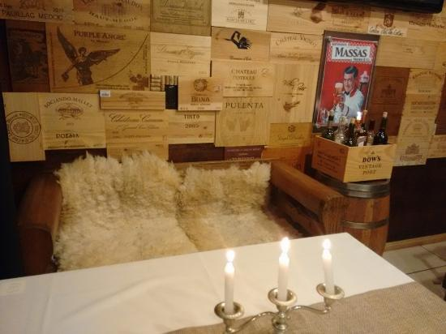
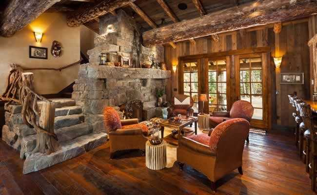

Uma pequena cafeteria, localizada na fronteira entre Brasil e Uruguai;
Possui um ambiente rústico porém acolhedor, com amplo salão repleto de mesas e nichos carinhosamente decorados, com peles de ovelha e mantas de crochê em lã.
 O cardápio oferece opções variadas, completa confeitaria e salgaderia e frio, dessa forma buscamos atender todos os gostos, indo dos mais tradicionais cafés, passando por deliciosas combinações de especiarias, fornecendo um café encorpado e aromático, sem deixar de oferecer opções de cafés gelados e drinks.
A Little Caffe é uma excelente opção do café da manhã ao happy hour!